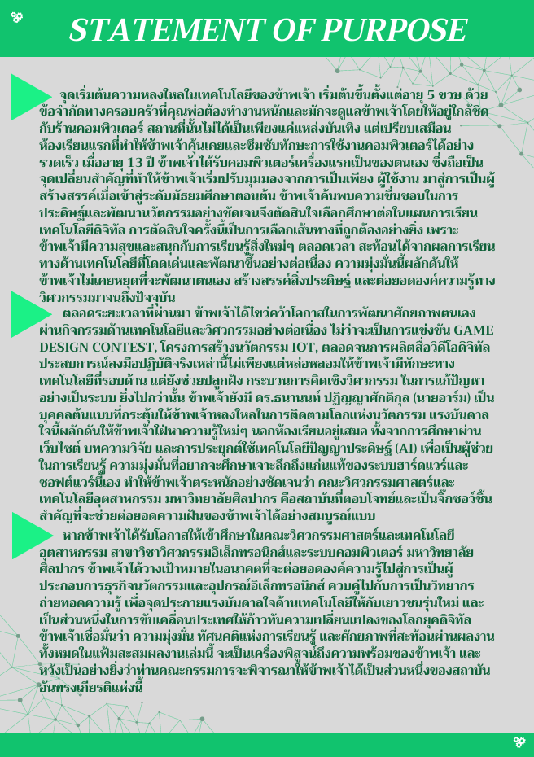
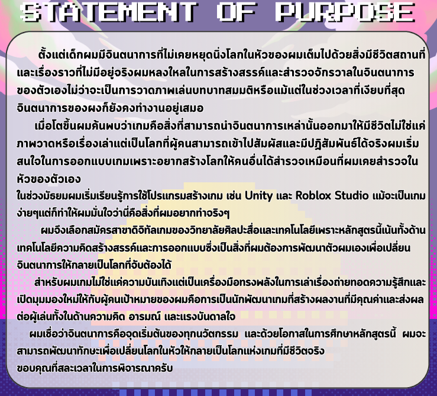

โครงสร้างการเขียน SOP (3 Parts)
- Part 1: อดีต / แรงบันดาลใจ: เล่าจุดเริ่มต้นความสนใจ บุคคลต้นแบบ ปัญหา หรือความท้าทายที่ทำให้เราอยากเข้าศึกษาในคณะนี้
- Part 2: ปัจจุบัน / การพัฒนาตนเอง: เล่าประสบการณ์การเรียนรู้ ทั้งในและนอกห้องเรียน ค่ายที่เกี่ยวข้อง และคำถามที่อยากหาคำตอบเมื่อเรียนต่อ
- Part 3: อนาคต / เป้าหมายที่ชัดเจน: ระบุเป้าหมายในอนาคตที่เชื่อมโยงกับตนเอง ครอบครัว และสังคม พร้อมบอกเหตุผลว่าทำไมต้องเป็นหลักสูตร/มหาวิทยาลัยนี้
เทคนิคเขียนอย่างไรให้โดนใจกรรมการ
- เชื่อมโยงกับผลงานจริง: สิ่งที่เราเขียนใน SOP ต้องสอดคล้องกับเกียรติบัตรและโปรเจกต์ที่เราทำมาจริงๆ เพื่อความน่าเชื่อถือ
- แสดงตัวตนและความมุ่งมั่น: ใช้ภาษาที่กระชับ จริงใจ และแสดงออกถึงแพสชั่นในการแก้ปัญหาหรือสร้างนวัตกรรมในสาขาวิชาชีพนั้นๆ
- ตรวจทานคำผิด: เช็กการสะกดคำ ชื่อคณะ และชื่อมหาวิทยาลัยให้ถูกต้อง ห้ามพิมพ์ชื่อมหาวิทยาลัยผิดเด็ดขาด
💡 เคล็ดลับเพิ่มเติม (Pro Tip)
SOP ไม่ใช่การเขียนประวัติซ้ำ แต่เป็นการเล่า "สตอรี่" ว่าทำไมโลกใบนี้ถึงต้องการเราในฐานะผู้เรียนสาขานี้ อย่าลืมตอบคำถามสำคัญให้ได้ว่า "ทำไมต้องเป็นเรา และทำไมต้องเป็นมหาวิทยาลัยนี้" ครับ

เอกสารตัวอย่างการเขียน SOP (15 หน้า)